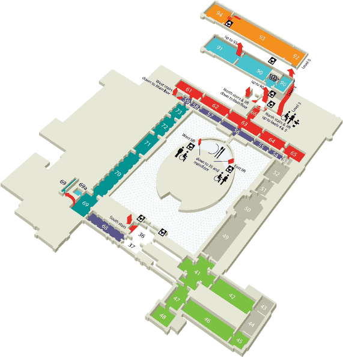

Upper floor
Upper floor
|
Main floor
|
Lower floor
|
Great Court

Middle East
54–59: South Arabia, Iran, Anatolia, Mesopotamia and Levant
(Rooms 51–53 re–opening Spring 2007)
Greece & Rome
69: Greece & Rome daily life
70–73: Rome, Italy and Cyprus
Money
68: Money
Egypt
61–66: Egyptian life and funerary archaeology
Britain & Europe
41–42: Medieval
44: Clocks & watches
45: The Waddesdon Bequest
46–48: 15th–20th century
49: Roman Britain
(Room 49 re–opening Spring 2007)
50: Bronze Age & Celtic
(Room 50 re–opening
Spring 2007)
Temporary exhibitions
Rooms: 69a,90–91
Asia
92-94 Japan
Temporary exhibitions
90-91 Paintings & Drawings
Gallery improvements
Rooms 49–53 and the East stairs:
re–opening Spring 2007
Room 43 will be closed until mid 2008
Room 44 will be closed until mid 2008
Key
Information Desk & Box Office
Toilets
Accessible toilets
Babycare
Cloakroom
Lost property
Restaurant
Café
Shop
Audio Tour
Telephone
Lift
Europe
41–42: Medieval
44: Clocks & watches
45: The Waddesdon Bequest
46–48: 15th–20th century
49: Roman Britain
(Room 49 re–opening Spring 2007)
50: Bronze Age & Celtic
(Room 50 re–opening
Spring 2007)
Middle East
51–59: South Arabia, Iran, Anatolia, Mesopotamia and Levant
(Rooms 51–53 re–opening Spring 2007)
Ancient Egypt
61–66: Egyptian life and funerary archaeology
Themes
68: Money
Ancient Greece & Rome
69: Greece & Rome daily life
70–73: Rome, Italy and Cyprus
Temporary exhibitions
69a: Encounters
90: Prints & Drawings
91: Asia
Asia
92–94: Japan
Gallery improvements
Rooms 49–53 and the East stairs:
re–opening Spring 2007
Room 43 will be closed until mid 2008
Room 44 will be closed until mid 2008